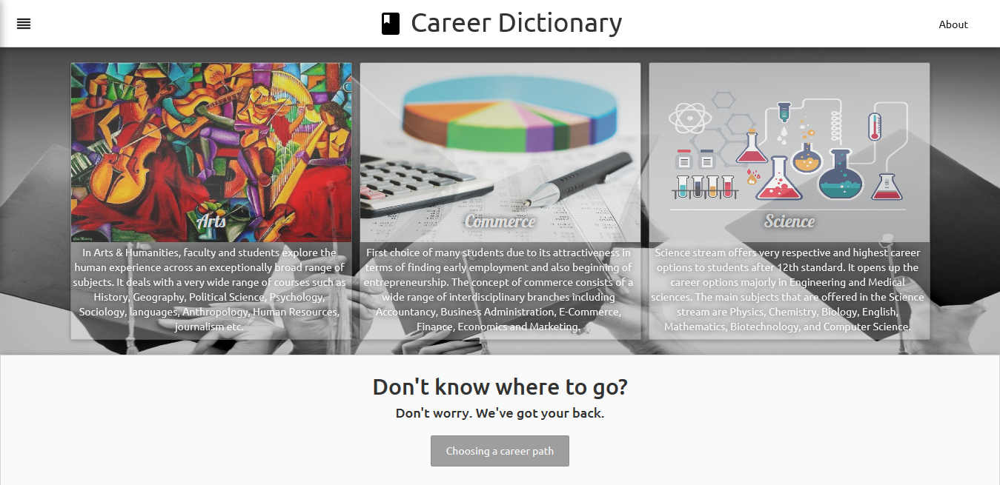
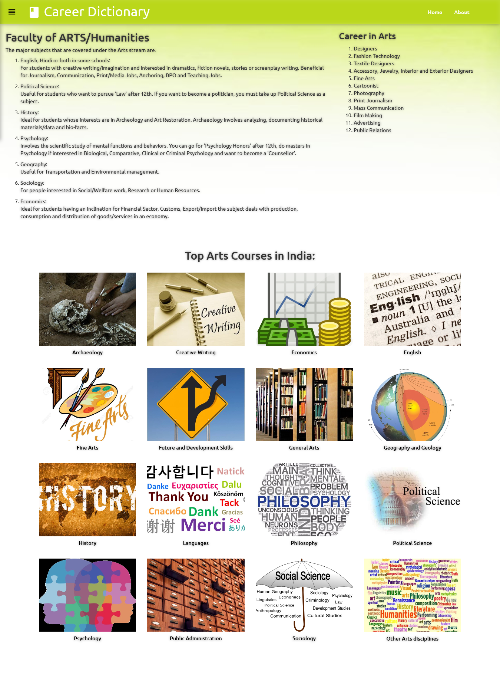
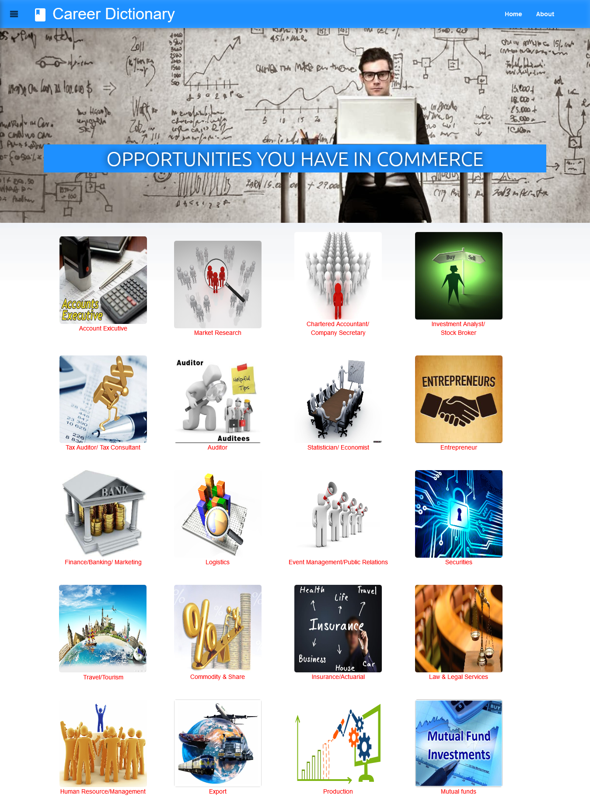
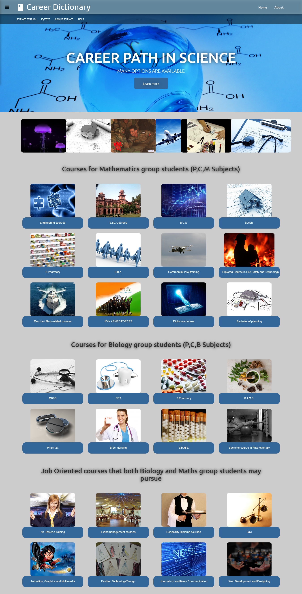
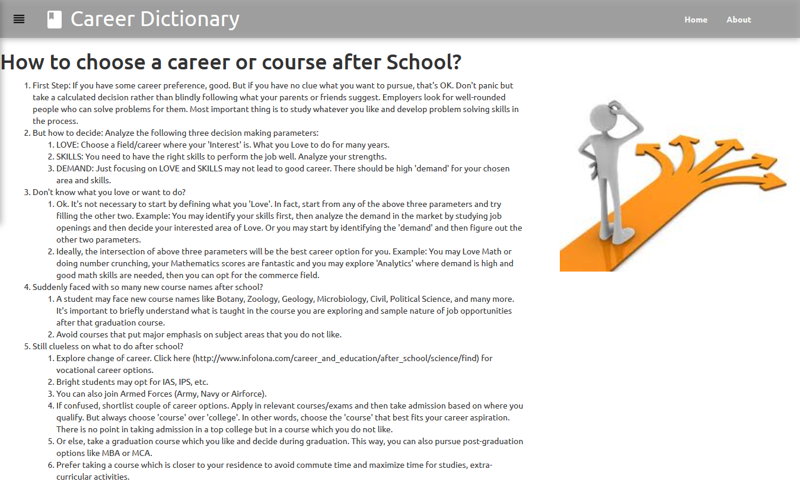
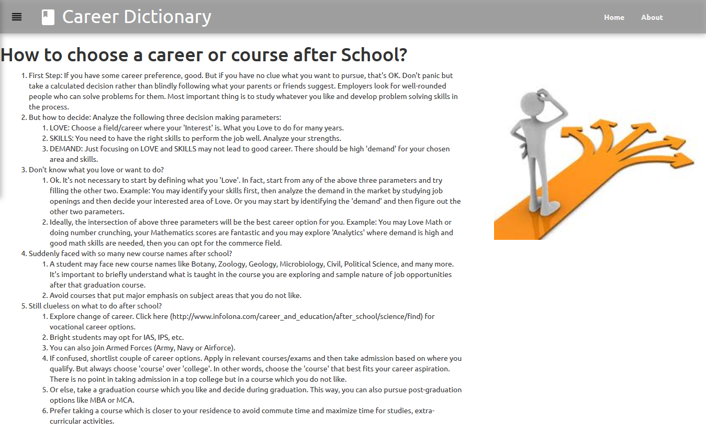

INTRODUCTION
Choosing the right course after 10th and 12th is extremely important decision that students have to take. It is important because the right course after 12th can lead to rewarding career right after completion or may become a basis for post-graduation course. It is also a difficult decision because there are so many good options which are available these days but we do not know which is good for us.
There are some factors that we must consider to choose the best course after 12th and the first step is to know what course options are available. Here we are trying to show you various available courses after 12th after every stream i.e. Science, Commerce and Arts. After you have explored to these courses it is important to check your eligibility for various courses before you apply. An aptitude test is usually a very good option to know about your strengths and how they match with your career choice. Going through course details can also help you in making the decision.
Objectives of Arts
Arts stream involves the study of subjects like Literature, Languages, Geography, Political science, History etc. Career options and opportunities in Arts stream are endless.
The arts represent an outlet of expression, that is usually influenced by culture and which in turn helps to change culture. As such, the arts are a physical manifestation of the internal creative impulse. Major constituents of the arts include literature – including poetry, novels and short stories, and epics; performing arts – among them music, dance, and theatre; culinary arts such as baking, chocolatiering, and winemaking; media arts like photography and cinematography, and visual arts – including drawing, painting, ceramics, and sculpting. Some art forms combine a visual element with performance (e.g. film) and the written word (e.g. comics).
With a background in Arts, one can pursue career options such as teaching, nursing, social work, law, politics, business, television, radio artist, content writing, acting, designing, singing and many more. Most of the political leaders, business owners as well as the big names of Indian tinsel town have background in arts stream. The reason of its vast scope is that it provides a wide range of subject choice to study.
Objectives of Commerce
Commerce as a stream of education can be defined as a study of trade and business activities such as the exchange of goods and services from producer to final consumer. The main subjects that are taught in the Commerce stream in Class 11 and 12 include Economics, Accountancy and Business Studies. Choose this field if you have a genuine interest in these subjects and have an affinity for numbers, the economy and business!
Commerce oriented employees are always required in banking sector or any multinational company on regular basis, they are also required in other industries like stock market, auditing and accounting firms, financial groups etc for assessment of personal wealth and investment of the clients. Commerce is one the most important subject while you are selecting your stream for making a flourished and prosper career, there are lots for possibilities for commerce background students after finishing their course. Below I am giving you list of few important commerce oriented courses which a student can pursue after 10+2th or intermediate.
Objectives of Science
Can you imagine a world without science? You wouldn’t have to worry about being late to work or finding your car keys because, well, jobs and cars wouldn’t exist. You would be living in a cave or a rudimentary built shelter, at best, wondering whether you’ll be able to hunt something for your next meal, or get killed and become some wild animal’s next feast in the process. The moment that early humans decided to take action into securing their survival marked the birth of science, as that’s the moment when they started asking themselves two vital questions about the world surrounding them: “How?” and “Why?”.
In modern usage "science" most often refers to a way of pursuing knowledge, not only the knowledge itself. In the 17th and 18th centuries scientists increasingly sought to formulate knowledge in terms of laws of nature. Over the course of the 19th century, the word "science" became increasingly associated with the scientific method itself, as a disciplined way to study the natural world, including physics, chemistry, geology and biology. It is in the 19th century also that the term scientist began to be applied to those who sought knowledge and understanding of nature.
Future Scope of Website
Our basic Objective for creating this website was to provide information about the courses available after 10th or 12th.
- In each section of website there is scope for providing the details about the colleges of the courses.
- Another section we can make is by knowing candidates marks we can tell them about where you are able to take admission.
- By providing links of the aptitude test we can calculate the IQ of the student and it is helpful for deciding the right stream.
- Another field is of providing the summary of each stream i.e. Science, Commerce, Arts. So it will be helpful for those who don’t know anything about it.
Screenshots:
    
